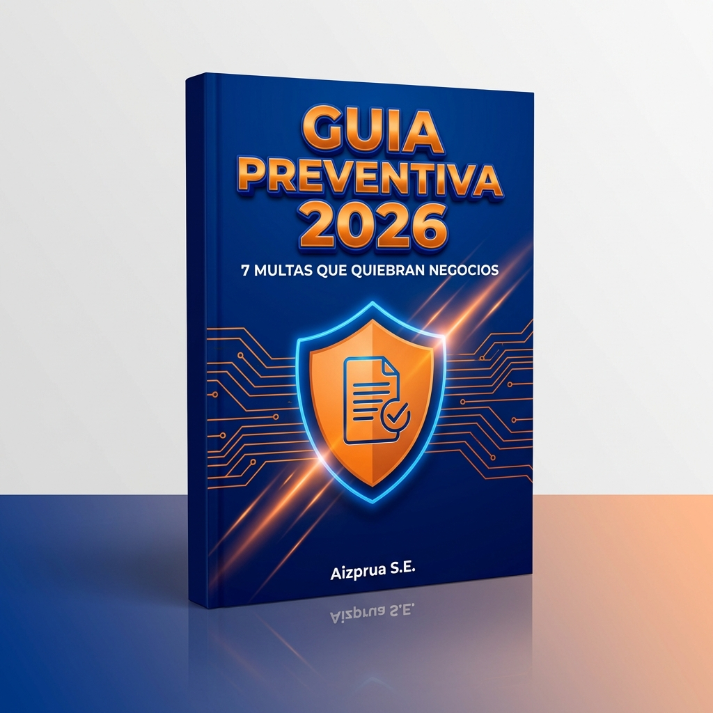

El 73% de las solicitudes de crédito comercial para Pymes en Panamá son rechazadas en el primer filtro del oficial de negocios antes de llegar al comité de crédito.
A diferencia de los préstamos personales donde el salario y la ficha de la CSS son el foco primario, el crédito comercial se rige por las directrices de la Superintendencia de Bancos de Panamá (Acuerdo No. 4-2013). En esta normativa, el comité de riesgo no evalúa el optimismo del empresario, sino la probabilidad estadística de impago ante contingencias de mercado. Conoce los criterios reales no publicados que deciden tu aprobación.
Lo esencial para obtener financiamiento comercial en Panamá:
Flujo Comprobable
El banco presta a flujos, no a intenciones. Requieres mínimo 24 meses continuos con Aviso y 2 declaraciones de renta formales con utilidad.
Ratio DSCR 1.3x
Tu flujo operativo libre debe superar al menos en un 30% la cuota mensual del préstamo solicitado según la fórmula de cobertura.
APC Dual Innegociable
Se exige la fianza solidaria de los socios. Un atraso en el APC personal de un directivo paraliza de inmediato el crédito comercial.
Bajo el Acuerdo No. 4-2013 de la SBP, las entidades bancarias están obligadas a constituir provisiones patrimoniales cuando una empresa presenta balances inconsistentes o renta en cero. Para proteger su propia rentabilidad, los bancos prefieren declinar el crédito de entrada.
Antigüedad operativa mínima de 24 meses continuos
Uno de los mitos más frecuentes es constituir una Sociedad Anónima express y solicitar crédito comercial al tercer mes. En la banca panameña, las empresas con menos de dos años caen en la categoría de Startups de Alto Riesgo, excluidas de líneas de crédito tradicionales sin garantía líquida (depósito a plazo fijo al 100%).
El analista verificará que el Aviso de Operaciones expedido por PanamaEmprende tenga al menos 24 meses continuos sin suspensiones ni cancelaciones, y que la actividad económica coincida con los movimientos de la cuenta comercial.
Declaraciones de renta DGI y estados financieros firmados por CPA
Aquí ocurre el descarte del 60% de los negocios: para pagar menos impuesto, muchos empresarios instruyen a sus contadores a inflar gastos o declarar utilidades simbólicas (o pérdidas recurrentes).
Al solicitar crédito comercial, el banco no revisa tus seguidores en redes; abre tus dos últimas Declaraciones Juradas de Rentas (Formulario F-20) recibidas por la DGI. Si la declaración reporta que no generas utilidades, el comité asume formalmente que no tienes capacidad para pagar la cuota.
Declarar renta en cero o pérdidas para ahorrar $800 en impuestos, y luego solicitar un préstamo de $50,000 para capital de trabajo.
Planificar con 2 años de anticipación utilidades netas saludables y estados financieros certificados por un CPA idóneo.
Ratios de cobertura de deuda (DSCR) y apalancamiento financiero
Los analistas de riesgo calculan un ratio matemático estricto: el DSCR (Debt Service Coverage Ratio):
En Panamá, el umbral mínimo aceptado por la banca comercial es de 1.25x a 1.35x. Por cada $1,000 de servicio mensual de deuda (cuota + intereses), tu empresa debe generar al menos $1,250 a $1,350 en flujo de efectivo operativo comprobable.
Historial crediticio impecable (cruce APC empresa + personal)
La responsabilidad limitada de una Sociedad Anónima no aísla el crédito bancario. En la práctica financiera de Panamá, los bancos exigen invariablemente la Fianza Solidaria e Ilimitada de los directores y beneficiarios finales.
El banco consultará en APC Experian Panamá simultáneamente:
- El RUC corporativo (referencias comerciales, proveedores, leasing).
- Las cédulas de los directores, dignatarios y accionistas con más del 10% de acciones.
Sustento comercial del destino de fondos y fuente de repago
Solicitar financiamiento para "capital de trabajo general sin destino específico" despierta sospechas de riesgo. El comité requiere un expediente documentado con cotizaciones proforma, contratos adjudicados u órdenes de compra verificables.
Para inventario y cuentas por cobrar de corto plazo. Se amortiza con la cobranza de facturas comerciales.
Para compra de maquinaria, vehículos o remodelación de oficinas con plazos de amortización de 3 a 7 años.
Tabla comparativa: pyme rechazada vs. pyme aprobada
| Factor de Evaluación | Pyme Rechazada | Pyme Aprobada |
|---|---|---|
| Declaraciones DGI | Renta en cero o pérdidas artificiales para evadir impuestos. | 2 años con utilidad neta positiva y concordancia en ITBMS. |
| Cuentas Bancarias | Mezcla de gastos personales de los socios con la cuenta comercial. | Cuenta corporativa blindada; retiros vía nómina o dividendos. |
| Historial APC | Atrasos de préstamos personales o tarjetas de crédito del representante. | Score APC personal > 680 puntos y sin cuentas castigadas. |
| Sustento del Destino | Explicación verbal sin cotizaciones ni contratos adjudicados. | Dossier financiero con órdenes de compra y flujo proyectado. |
Guía práctica de bancarización y crédito comercial en Panamá
Descarga el checklist paso a paso con los requisitos exactos de los 5 principales bancos de la plaza (Banco General, Banistmo, BAC, Global Bank y Caja de Ahorros) para armar tu expediente sin errores.
- Checklist de 18 documentos obligatorios exigidos por comités.
- Plantilla de presentación del Destino de Fondos.
- Consejos para optimizar tu reporte APC antes de radicar la solicitud.

Preguntas frecuentes sobre crédito comercial
¿Puedo obtener crédito bancario con una sociedad anónima recién creada?
No a través de la banca comercial tradicional de primer piso. Los bancos exigen un mínimo de dos años de facturación comprobada mediante declaraciones de renta. Para empresas nuevas, las alternativas son microfinancieras, cooperativas o líneas con garantía líquida (depósito a plazo fijo al 100%).
¿Qué porcentaje de interés cobran los bancos comerciales en Panamá para Pymes?
En el mercado panameño para 2026, las tasas activas para créditos comerciales Pyme oscilan entre el 7.5% y el 11.5% anual, dependiendo del perfil de riesgo, la presencia de garantías reales (hipotecas, fianza prendaria) y la reciprocidad comercial de la cuenta de operaciones.
¿Es obligatorio tener estados financieros auditados?
Para montos menores a $25,000, algunos bancos aceptan estados financieros compilados por un CPA. Sin embargo, para financiamientos superiores a $50,000 o líneas rotativas, los comités de crédito exigen Estados Financieros Auditados con el dictamen formal del Contador Público Autorizado.
¿Afecta mi APC personal si el préstamo lo solicita la Sociedad Anónima?
Sí, de forma determinante. En Panamá, los bancos exigen la fianza solidaria de los accionistas y directores firmantes y revisan minuciosamente el historial APC personal de cada uno antes de autorizar el desembolso.
Arubel Aizprua
Fundador & Especialista en Estructuración Empresarial
Asesora a dueños de negocio en Panamá en la constitución de sociedades, blindaje de contratos y ordenamiento financiero para prevenir multas y contingencias legales.
Contactar directamente por WhatsApp